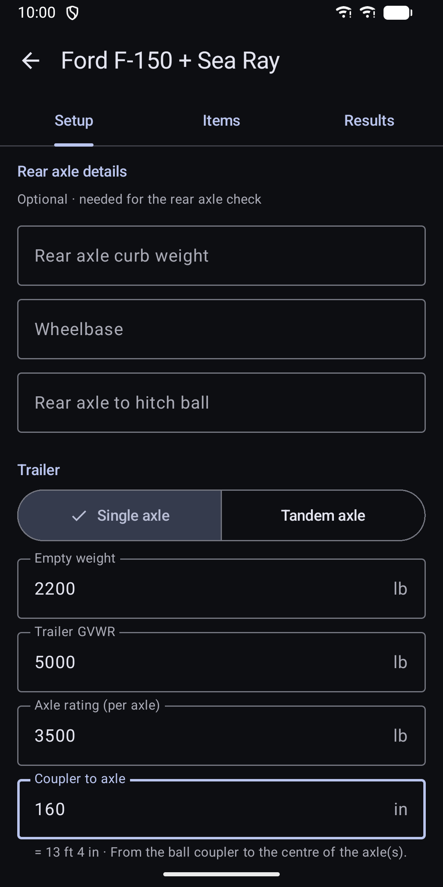
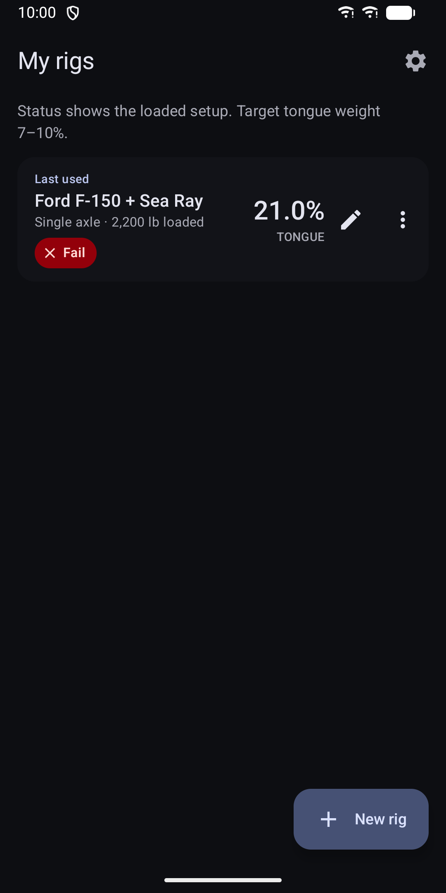
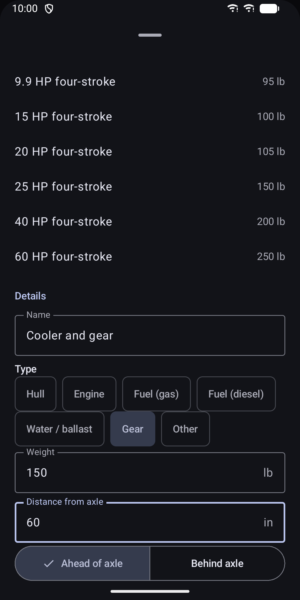
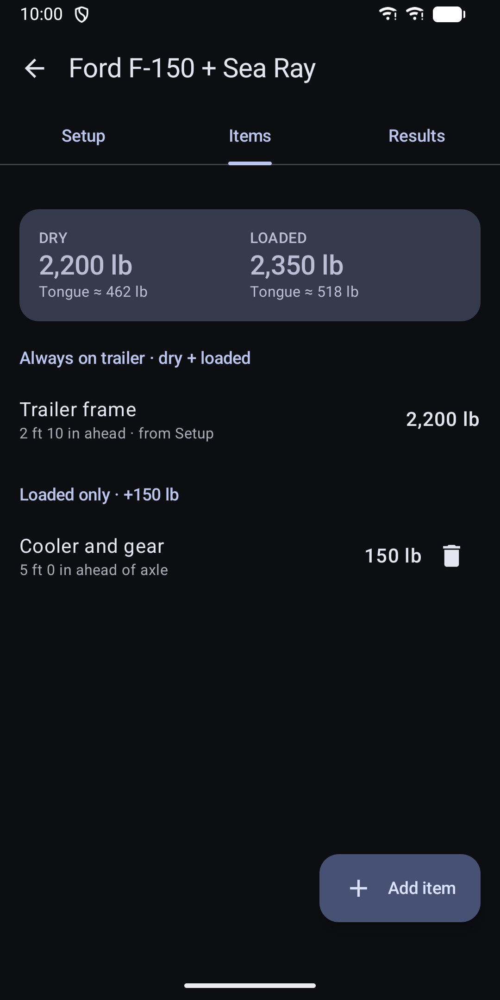

Peso en lanza para barcos
Comprueba peso en lanza, cargas por eje y límites de tu remolque de barco.







Acerca de la app
Comprueba que tu remolque de barco esté bien cargado antes de salir de la rampa. Peso en lanza para barcos trata el vehículo, el remolque y el barco como un solo conjunto. Introduce los valores de la etiqueta de la puerta, de la bola de enganche y de la placa del remolque, añade lo que va sobre el remolque y comprueba de un vistazo si el conjunto cumple. Todo funciona en tu móvil. La app no tiene permiso de internet y no necesita cuenta. QUÉ COMPRUEBA - Peso en lanza en porcentaje, con el 7 al 10 por ciento como objetivo - Peso máximo en lanza del enganche y del receptor - Carga del eje del remolque y MMA del remolque - Capacidad de remolque, carga útil, MMA del vehículo y MMC del conjunto (GCWR) - Carga del eje trasero (GAWR), si indicas la distancia entre ejes y el voladizo del enganche Cada comprobación muestra Correcto, Aviso o Fallo. El remolque vacío y el cargado aparecen lado a lado, así ves qué cambian el combustible, el agua y el equipo. PENSADA PARA LA RAMPA - Remolques de un eje y de dos ejes - Elementos de carga con peso y posición: casco, motor, combustible, vivero o agua de lastre, equipo - Depósitos de combustible y agua con control de nivel. El peso se calcula según el tamaño y el nivel del depósito. - Preajustes para motores fueraborda de 2,5 a 350 CV y para equipo habitual - Consejos para llegar al 7 al 10 por ciento: vaciar el vivero, adelantar el barco en el remolque, mover equipo o desplazar el eje - Remolques guardados sin límite. Edita, duplica o elimina cualquiera desde la lista. - Resumen en PDF para guardar o compartir - Widget en la pantalla de inicio para tu último remolque usado - Unidades imperiales o métricas - Tema claro y oscuro, diseños para móvil y tableta, etiquetas para lectores de pantalla y botones grandes CÓMO SE OBTIENE EL PESO EN LANZA La app estima el peso en lanza a partir del peso y la posición de cada elemento respecto al eje. No mide nada. Los resultados son tan buenos como los pesos y las distancias que introduces. PRIVACIDAD La app no tiene permiso de internet, ni cuenta, ni anuncios, ni analíticas. Tus conjuntos se quedan en tu móvil y no se incluyen en la copia de seguridad en la nube. Un PDF solo sale del móvil cuando lo compartes o lo guardas. COMPRA La app es de pago. Después incluye todas las funciones: conjuntos ilimitados, todos los preajustes, exportación a PDF y widget. No hay compras dentro de la app ni suscripción. SEGURIDAD Esta app estima las cargas a partir de los números que introduces. Es una ayuda de planificación, no una báscula certificada. Respeta siempre los valores de tu vehículo, enganche y remolque, y pesa el conjunto en una báscula certificada si tienes dudas. Tú eres responsable de un remolcado seguro y legal.